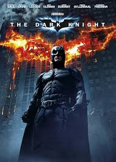

The Dark Knight

Konusu
Batman, Gotham şehrini Joker'in kaos planlarından korumaya çalışır. Joker'in kargaşa planları şehri karanlığa sürüklerken Batman, adalet için sınırlarını zorlar. Harvey Dent'in Two-Face'e dönüşümüne tanık oluruz.
Yönetmen
Christopher Nolan
Oyuncular
- Christian Bale - Bruce Wayne / Batman
- Heath Ledger - Joker
- Aaron Eckhart - Harvey Dent
- Gary Oldman - James Gordon
Ödüller
2 Oscar (En İyi Yardımcı Erkek Oyuncu - Heath Ledger, En İyi Ses Kurgusu), 8 Oscar adaylığı